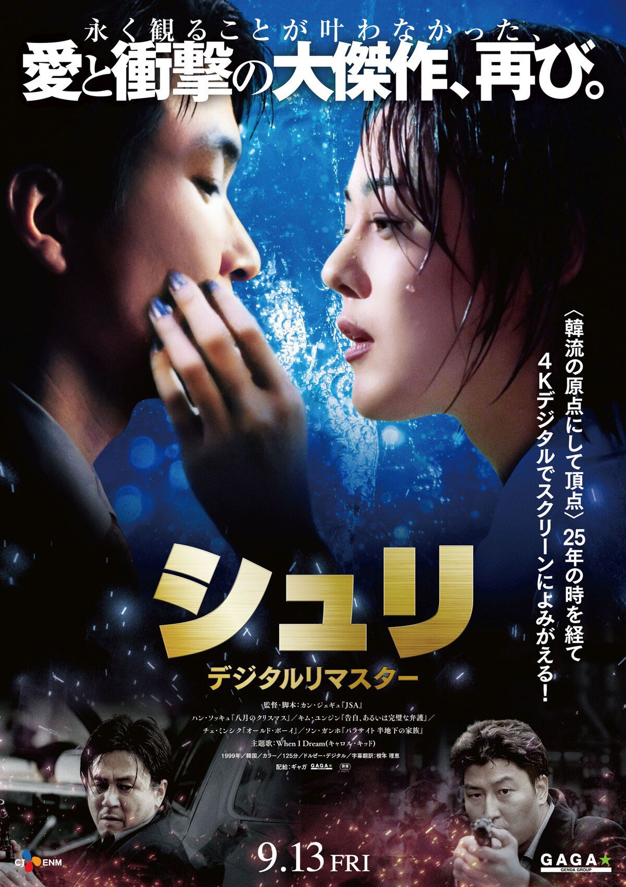

교수님의 한국 생활에 대해 여쭤 보았습니다.
한국에 오신 이유는 무엇인가요?
영화 <쉬리>를 알고 계시나요? 물고기 이름인 쉬리에서 따온 영화 제목인데 한석규나 송강호가 나오는 2000년대 영화예요. 제가 대학생일 때 일본에서 개봉한 최초 한국 영화였죠. 일본에서 유행하게 된 한류 파도의 첫 시작이라고도 할 수 있겠네요. 이 영화를 보고서 한국에 빠지게 된 계기가 되었어요.
한국에 오신 이후의 일생생활은 어떠셨나요?
무작정 영화를 보고 ‘아 이건 한국으로 가야겠다’라고 다짐했어요. 우선, 일본인이면 일본어 선생을 할 수 있다는 말에 학원 강사가 되었습니다. 학원 강사가 되고자 면접을 봤을 때, 4대 보험이나 집이 있는지 등의 질문에 할 줄을 몰라서 여관이나 모텔에서 지냈습니다. 학원 수강생 덕분에 신문으로 일일이 빈 집을 찾아 다녔고, 월세와 은행 업무 도움을 받았습니다.
생활하면서 힘들었던 부분은 어떤 것이었나요?
집을 구하는 게 문제였어요. 부동산 시스템이 달랐고, 구직 활동도 마찬가지였어요. 그리고 한국어를 아예 모르는 상태에서 부산으로 처음 왔는데...사투리 억앙을 이해하는데 시간이 걸렸어요. NHK 같은 방송을 통해 일본인 발음으로 인사말부터 조금씩 공부했어요.
대학시절에 생각하셨던 진로를 변경하신 이유는 무엇인가요?
학원 강사직을 그만 둔 뒤, 부산외대에서 석사, 박사 과정을 거치고 교수로서 일을 시작한 건 수원대학교였어요. 당시 교양과목으로 하는 수업이라 A1 레벨 정도로 진행할 수 없었는데 또 다른 일자리를 찾아보려고 하니 지도교수님께서 어느 대학에 시간강사를 구한다는 이야기가 있더라, 추천해주겠다는 이야기가 진행되어왔어요. 시간이 지나 부산으로 돌아오면서 학생들의 레벨이 높아진 걸 보고 심화 수업을 하게 되었어요. 교수 한 명이랑 학생 그룹으로 일본에 문화탐방하는 이벤트나 아후레코 같은 프로그램을 기획하면서 어느새인가 점점 교수직을 지금까지 이어오게 됐어요.
교수직을 하시면서 가장 기억에 남는 일이 있다면?
글쎄요... 교수직을 하면서 보람이 있었다고 느낀 건, 제가 가르쳤던 제자가 교토에 가서 우연히 만났을 때 “센세!”하고 불러줬던 순간이요. 지금까지 저를 거쳐간 학생들은 많았겠지만, 제게 “사와이 센세 아니신가요?”라고 말을 걸어줬을 때 교수를 하기 잘했다고 생각이 들었던 것 같아요. 어쨌든 학생의 기억에 남는 사람이 되었으니까요.
반대로 안타까운 이야기라서 기억에 남는 학생이 있는데, 당시 SNS 같은 연락망도 없던 시절이라 졸업을 앞두고 갑자기 행방불명이 된 학생이 몇 명 있어요. 사정을 알면 들어주거나 도와줄 수도 있었을 텐데 제가 마지막에 좀 더 상담을 해 보는 게 좋았나 싶더라고요. 무슨 일이 있나 싶다가도 찾는 게 쉬운 일이 아니니까요. 어디선가 우연히 마주칠지도 모르기에 더욱 잊어버리지 않으려고 해요. 그래서 지금도 걱정이 좀 되네요.
인생에서 가장 힘들었던 적이 있다면?
한국에 있을 때, 일본이 아니니까 생활이 힘들다든가 고생한 기억이 많은데, 그중에서 수업으로 쉬지 못해서 할머니가 돌아가셨을 때 바로 가지 못했던 게 괴로웠어요. 결국 장례식에 참가하지 못했는데 한국에 있으니까 현실감이 느껴지지 않았지만 일본으로 돌아가게 되면 이게 진짜가 되는 거잖아요. 실감이 잘 안 났거든요. 해외에 있으니, 일본에 돌아가고 그 일들이 진짜가 되는 순간이 가장 힘들었어요.
select section